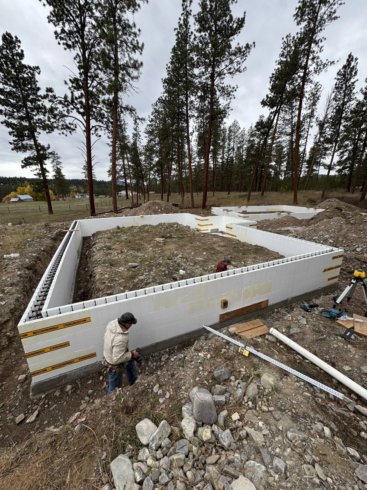
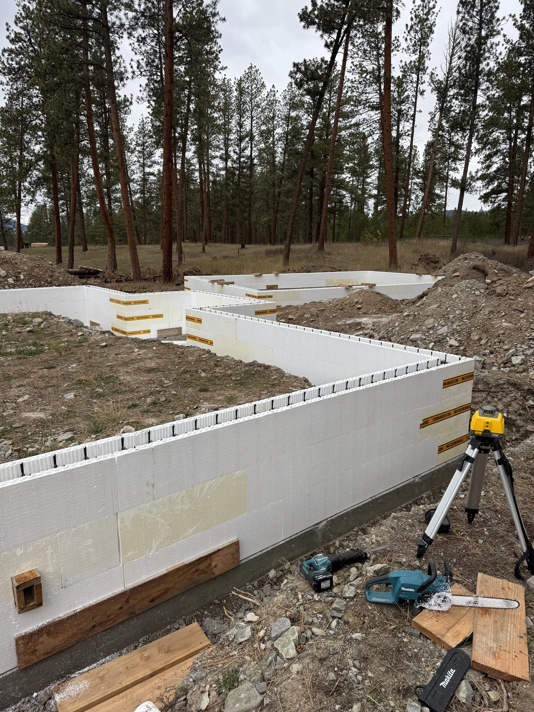
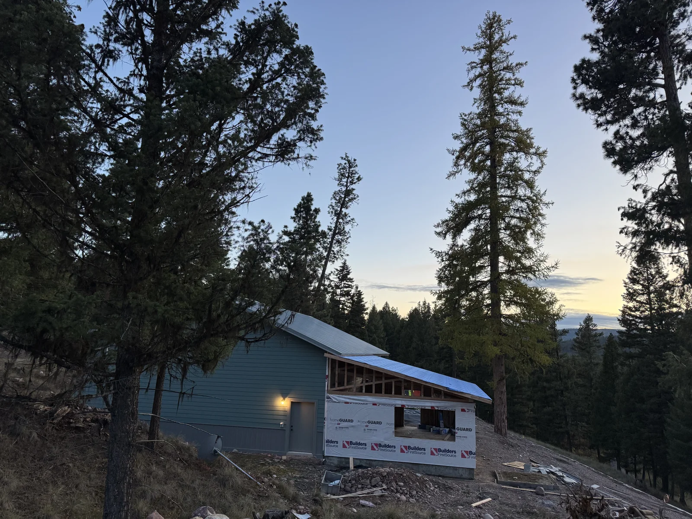
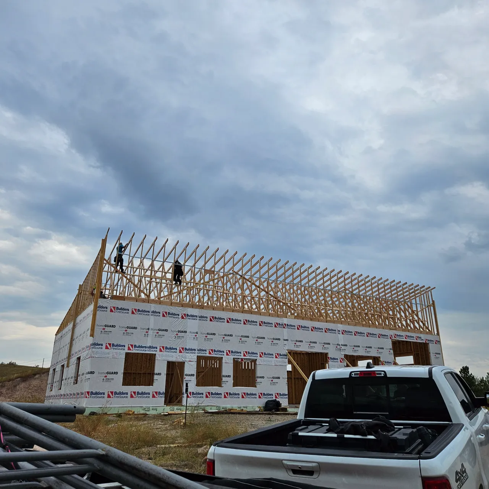

Post-frame shops, barns, garages, and storage buildings built for Western Montana weather — clear scopes, clean work, and owner‑operated oversight.
Pole buildings (also called post-frame buildings) are a practical way to add usable space fast — from shop buildings and equipment storage to barns and oversized garages.
In Missoula and Western Montana, we plan for real-world conditions: snow, wind, freeze-thaw cycles, and site drainage. The goal is a building that looks clean on day one and stays tight for years.

We’ll help you choose the features that actually impact function and longevity — especially for snow management, durability, and day-to-day use.

We build pole buildings across the Missoula area, including properties near Lolo, Frenchtown, Bonner, East Missoula, Orchard Homes, and the I‑90 corridor — plus nearby communities in Western Montana when the project fits.
If you’re not sure where your property falls, send your address and a short description of what you want to build. We’ll tell you what’s realistic and what to plan for.

If you’re also upgrading living space, these services are common alongside new shops and outbuildings.

Share your approximate size, intended use (shop, barn, storage, garage), and location. We’ll follow up to schedule a site walk and provide a clear proposal.